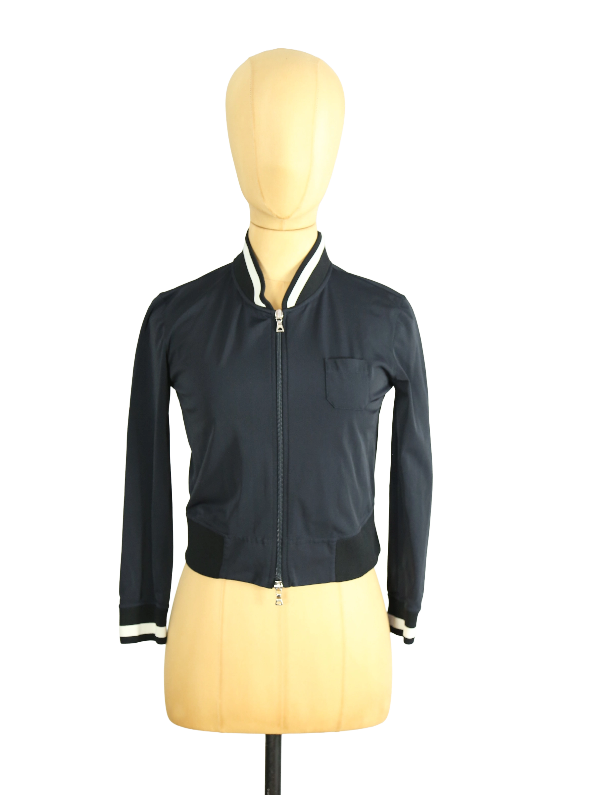

1 / 12Aus dem kuratierten Archiv von Disorder119. Eine reduzierte, präzise interpretierte Bomber-Silhouette aus dem Hause Prada. Die verkürzte Länge verleiht dem klassischen Design eine moderne, klare Linie, während der technische Stoff eine glatte, leicht strukturierte Oberfläche mit subtiler Spannung erzeugt. Der Reißverschluss in der Front wird durch einen schmalen Stehkragen mit kontrastierenden Streifen gerahmt, der dem Stück eine sportlich-architektonische Note gibt. Die schmale Passform folgt der Körperlinie ohne einzuengen und wird durch elastische Abschlüsse an Saum und Ärmeln definiert. Eine dezente Brusttasche ergänzt die minimalistische Gestaltung und unterstreicht den funktionalen Charakter dieses präzise konstruierten Pieces. Details: Marke: Prada Farbe: Schwarz Größe: S Passform: Schmal, cropped Verschluss: Reißverschluss Material: Polyamid, Elastan Herstellungsland: Italien Fotografie & Passform: Das Kleidungsstück wurde auf unserer Standard-Schneiderpuppe fotografiert, die wir zur konsistenten Darstellung aller Kleidungsstücke verwenden. Maße der Schneiderpuppe: Brustumfang 89 cm Taillenumfang 66 cm Hüftumfang 89 cm Schulterbreite 38 cm Zustand: Sehr guter Zustand mit leichten Gebrauchsspuren. Rechtliche Hinweise: Verkauf als gebrauchtes Kleidungsstück. Die Beschreibung erfolgt nach bestem Wissen und Gewissen. Farbnuancen und Oberflächenwirkungen können aufgrund von Lichtverhältnissen bei der Fotografie sowie unterschiedlicher Bildschirmdarstellungen leicht vom Original abweichen. Disorder119 steht für sorgfältig kuratierte Designerstücke mit Fokus auf Authentizität, Qualität und zeitlose Relevanz.
Shop-Kontakt noch nicht eingerichtet: WhatsApp-Nummer oder E-Mail-Adresse fehlen in SHOP_CONFIG (index.html).
Disorder119 · Kuratiertes Archiv für Designer-, Vintage- und Contemporary-Mode. Jedes Stück wird einzeln ausgewählt, fotografiert und beschrieben.